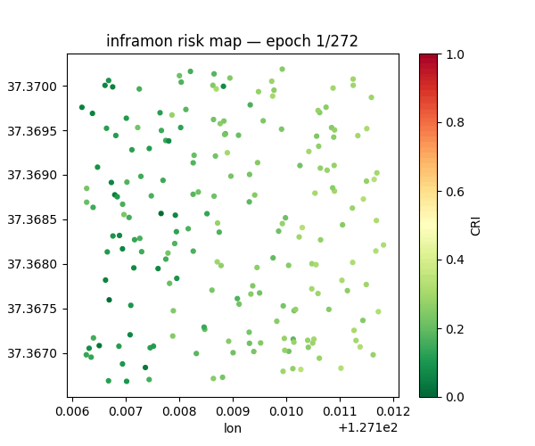
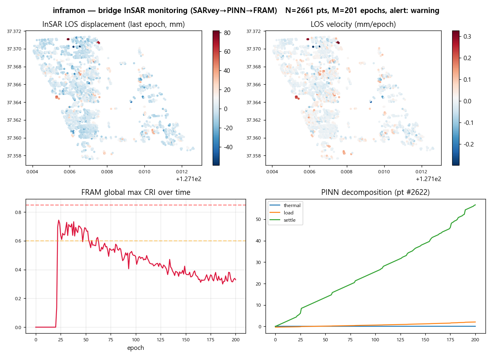
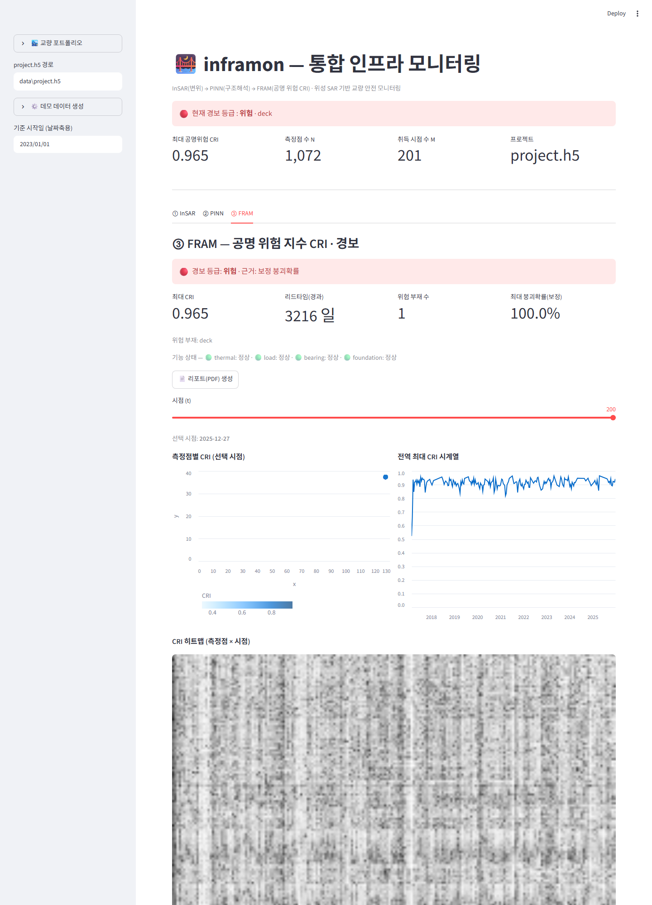
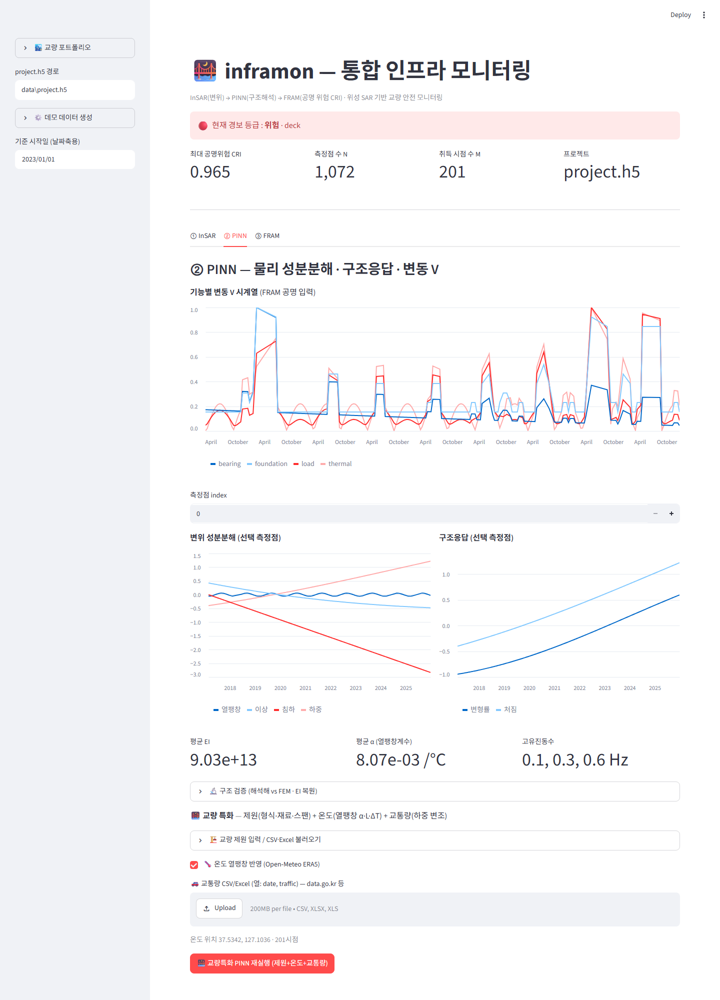
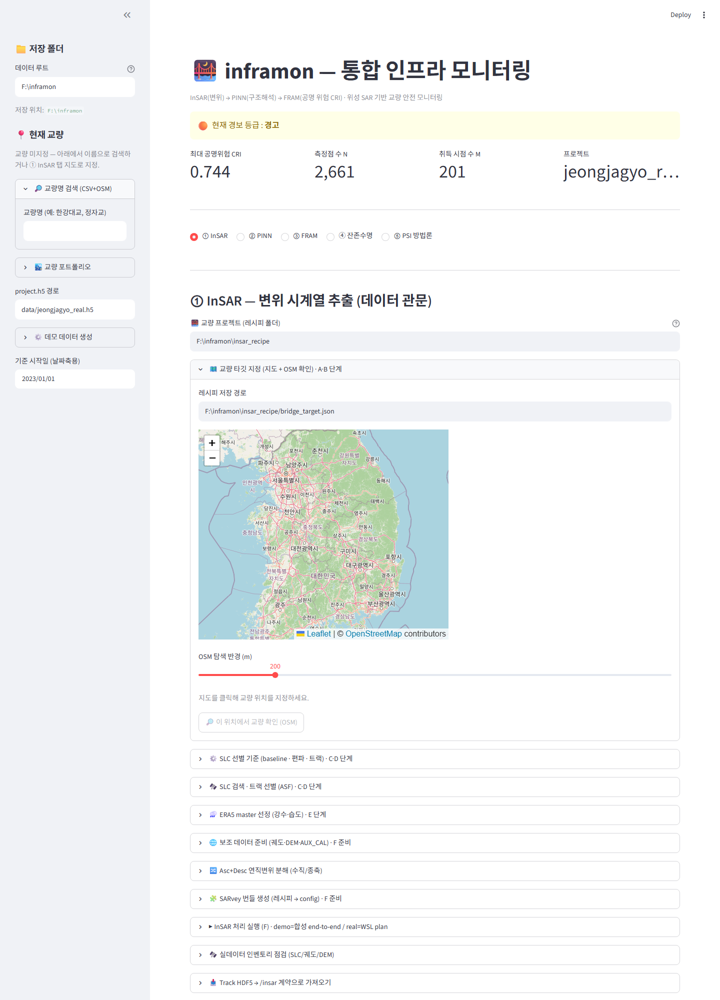

위성 SAR(InSAR) 기반 교량 인프라 모니터링 플랫폼
Sentinel-1 변위 → PINN 구조해석 → FRAM 공명위험(CRI)
정자교 실 Sentinel-1 데이터를 다운로드→ISCE2 코레지→MiaplPy→SARvey→PINN→FRAM 으로 처리한 실제 산출.


Streamlit — 교량 선택·SLC 다운로드·처리·위험 진단·리포트를 한 화면에.



OSM 교량 선택 → ASF SLC 검색·트랙 선별 → SARvey 시계열 → 변위 추출. 기준점·온도회귀·대기보정으로 정확도 보정.
Euler-Bernoulli PDE + FEM 모달로 변위를 열팽창/하중/침하/이상으로 분해, 절대 EI·α 역산. 해석해 검증(오차 <0.1%).
기능공명분석으로 공명위험지수 CRI + 4단계 경보. isotonic 캘리브로 붕괴확률 매핑, N-K 함수망.
Streamlit — 교량 선택·SLC 다운로드·처리·위험 히트맵·시계열·리포트(PDF)·다중 교량 포트폴리오.
pip install -e ".[dev]" python -m inframon --doctor # 환경 진단 python -m inframon --demo # 합성 데모 → data/project.h5 + CRI python -m streamlit run src/inframon/dashboard/app.py # 대시보드
실 InSAR 처리(ISCE2/MiaplPy/SARvey)는 WSL2/Linux 필요. 코어·대시보드는 합성으로 동작.
InSAR 처리는 SARvey(기본 엔진), MiaplPy, MintPy, ISCE2 를 CLI 로 호출한다(별도 설치). inframon 은 GPLv3. 인용은 CITATION.cff.